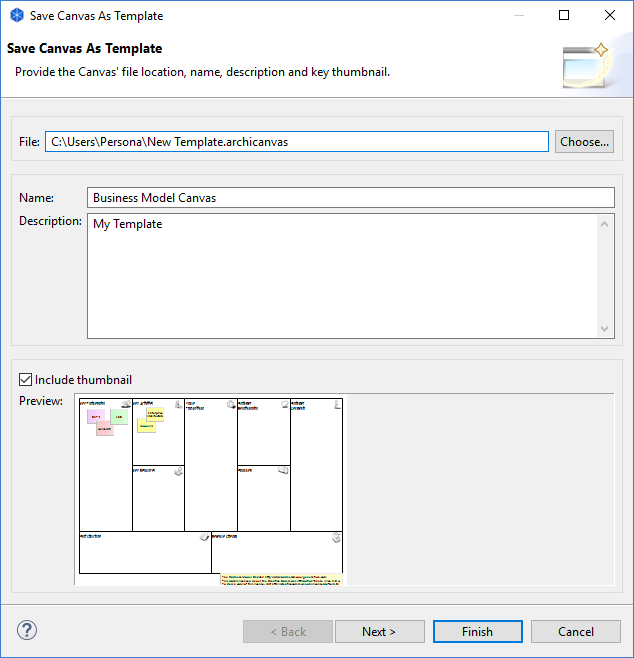
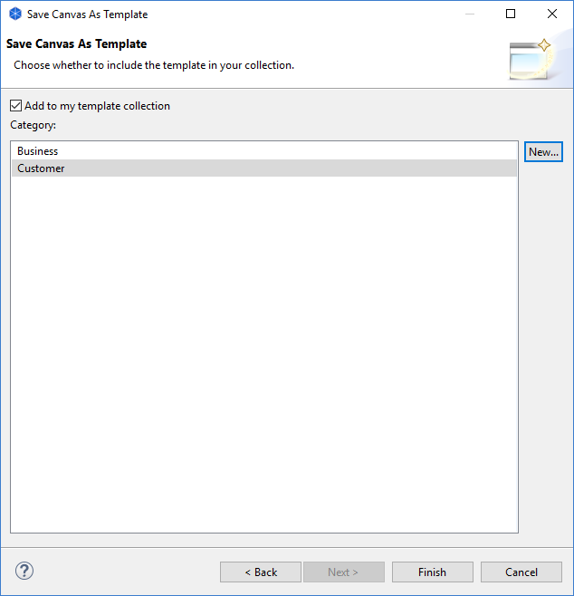

将画布另存为模板
要将现有的画布保存为模板，请按以下步骤操作：
- 创建一个新的画布或打开一个包含画布的现有模型。
- 在模型树中选择画布，右键单击它并选择“将画布另存为模板...”。将打开一个向导：

- 在向导中，为模板文件的位置提供文件名、模板名称（这与模型名称不同）和说明。
- 选择是否要在模板中包含画布的缩略图。
- 点击“下一步”进入向导的下一页：

- 选择是否要将模板添加到您的收藏中。您的模板集合是一个按类别分类的列表，这些类别将显示在“New Canvas from Template”向导中。如果没有可供选择的类别，您可以通过单击向导中的“新建...”按钮来创建一个新类别。
- 按“完成”。
模板将以“*.archicanvas”扩展名保存在您的文件系统中。如果您愿意，可以与其他Archi用户共享此模板。